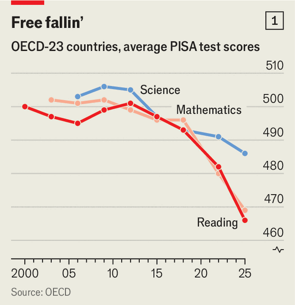
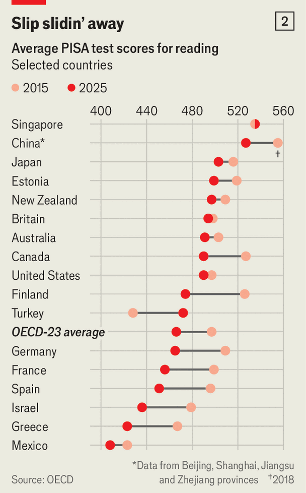

Are teenagers growing dimmer?
The latest global school tests reveal shocking new declines

Sep 10th 2026
EVERY THREE years the OECD, a club of mostly rich countries, releases the results of international school tests sat by 15-year-olds all across the world. There were reasons to hope that the latest data, published on September 8th, would bring good news. Marks in mathematics, reading and science had collapsed in the previous round of testing, which was carried out just after the pandemic. Policymakers dared hope that, with the calamity well in the past, grades might start to rebound.

That is not what happened. On the contrary, in rich countries—the primary focus of the tests—scores have fallen further (see chart 1). In literacy, the decline is actually speeding up. These data suggest that there are long-running factors pushing down achievement in schools, and that without swift correction, pupils’ abilities could plumb yet further depths. Anyone who cares about the young of today—and in turn the societies of tomorrow—ought to be alarmed.
The OECD’s project, known as PISA, takes a measure of young people’s aptitudes as they approach the end of their compulsory school days. The number of school systems taking part has expanded over the years: the latest tests were sat in all 38 OECD member-countries and in 53 other places (many of them developing economies). The results are used to create an international league table of sorts.
This year, as in almost every round of tests since 2000, Asian school systems rule the roost. Children in China—taking part for the first time since 2018—came at or near the top in all disciplines. But scores for that country are unrepresentative because, among other issues, the tests are sat in only four provinces. There are fewer doubts about the high marks recorded in places such as Singapore, Taiwan and Japan. Children in those countries also seem to be scoring some way ahead of peers in other parts of the world.
Estonia still looks the best school system in the West. Turkey is rising very fast. And there is heartening news for Britain, whose youngsters now rank inside the world’s top ten in all three disciplines. Compared with three years ago, Britain has pushed up its science results and held reading and mathematics broadly steady. That counts as a good result when many others are heading down.

Yet zoom out, and the dominant story is of long-term decline. The average scores in the 23 OECD-member countries that have taken part in every edition of PISA reached a peak around 2012 and have been falling ever since. In both maths and reading, 15-year-olds in OECD countries are now testing at levels that might have been achieved by 14-year-olds a decade ago (see chart 2). Findings for American schools are clouded by low response rates, though the available data suggest that in the latest testing round their scores in literacy have tumbled in line with the rich-world trend. Trends are a little less gloomy in developing countries, where achievement is lower to begin with. But even in many of those places, scores in maths and reading are declining.
Children who were already among the poorest performers are falling even further behind. Across education systems, the gap between low- and high-performing students is now the largest ever recorded by PISA, in all the disciplines it tests. Some 20% of 15-year-olds in OECD countries are considered low performers in all three of reading, mathematics and science—up from 16% when the tests were run four years ago. The OECD argues that these youngsters will struggle to understand anything but the simplest texts, or to make sense of a utility bill.
What is causing this decline? The lingering impact of the pandemic doubtless has a role. The youngsters who participated in this year’s PISA tests were about ten years old when covid-19 hit; it is possible they were hurt more by the disruptions of that era than teenagers who were further into their school careers.
The pandemic also created new problems that continue unchecked. Rates of absence remain much higher than before covid spread, for reasons that are much contested. Across rich countries about 15% of pupils miss at least a day of primary school every fortnight, up from about 10% in 2019; absences are up in secondary schools, too. Missing even a few days of lessons can have a big impact on grades.
But falling scores will also intensify long-running worries about the impact of technology on children’s learning—and on their reading skills in particular. Ubiquitous phones and widespread access to social media mean young people are getting less practice making sense of complex texts, argues Andreas Schleicher, head of education at the OECD. He points to an increase in the number of test-takers classed as “hasty readers” who blast briskly through the literacy assessment while getting many of the answers wrong.
Screens are clearly diverting children from books: just 37% of nine-year-olds in America say they read them for pleasure now, down from nearly 60% in the 1990s. Declining literacy could well be dragging down marks in other disciplines—because reading well is key to progressing in subjects such as maths and science, too.
Tackling these challenges requires first-rate policies in schools. But on a wide range of issues, education ministries seem to be dropping the ball. Mr Schleicher worries that schools have become “complacent” and that they are increasingly inclined to tell pupils and parents that “mediocre work is great.” He criticises overzealous and haphazard use of educational software in classrooms, arguing in a guest essay for The Economist that pupils have too often become “crash-test dummies” for unproven kit. Some data suggest that schools have been allowed to grow rowdier. In one recent survey rich-world teachers reported that the amount of time they spend simply keeping order is creeping up.
PISA may itself share some blame for setting school reformers on a dodgy course. When the tests were first carried out in 2000, Finland shocked the world by coming top of the table. Policymakers who trekked to Helsinki for lessons returned with messages that teachers in their home countries were only too happy to receive. Finland appeared to have achieved striking results with only limited testing and inspections. Its educational establishment espoused “play-based” learning, especially for younger children. It argued that teachers should spend less time talking in front of blackboards and more time helping pupils work things out for themselves.
Yet since that first test almost no country has seen its scores fall as steeply as Finland—a slide that continues in the latest results. Finland’s critics posit that the high marks it achieved in 2000 in fact reflected old-fashioned educational approaches that were still prevalent in its schools well into the 1990s—and not the newer “progressive” policies for which it became famous. If that is the case, the error may have set dozens of school systems off-course.
What countries could serve as new models? Asian school systems have shared somewhat in the declines recorded in recent years, but generally less than other rich places. The big gap in scores between East and West suggests policies in East Asia deserve another look. Parents there are fanatical about schooling and often dig deep into their pockets for extra lessons.
Critics are right to point out that such social factors are difficult to replicate. But the region’s politicians have made a number of wise decisions, too. Asian countries are much less obsessed than are Western ones with keeping classes small: they generally choose to have fewer teachers, whom they can then pay better and train more intensely. That seems to work better than adding ever more staff to schools—the main way that America, in particular, has long tried to drive up scores.
Britain’s march up the rankings deserves more attention than it has received. Starting some 15 years ago under a Conservative-led coalition government, school reformers in England—by a long way the largest of the country’s four separate school systems—zigged when much of the rest of the world zagged.
The nation made its curriculums more fact-filled (some prefer to say “knowledge-rich”) at a time when policymakers elsewhere had been waxing lyrical about instilling vague soft skills. It made exams more rigorous, deprioritised coursework (on which it is easy to cheat) and toughened inspections. Politicians also sought to steer schools away from newfangled styles of instruction that are fashionable but untested, and back towards methods that are more dyed-in-the-wool.

That England’s policies have had some protective effect on school marks is most evident when comparing it with school systems just next door that have chosen a starkly different path (see chart 3). Twenty years ago children in Scotland outperformed their peers south of the border. Now they tend to do worse—even though school spending per pupil is much higher. Scotland’s critics blame a modish curriculum, as well as a lax approach to discipline. Covid or screens do not explain the disparity, given that these scourges have affected all children in Britain in a fairly similar way.
Test scores are not the measure of a person, nor proof that they are destined for failure or success. But good grades are highly predictive of fatter earnings, better health and longer lives, among a world of other benefits. At the national level, improvements in a country’s braininess appear to track closely with later bursts of economic growth; one analysis by Ludger Woessmann and Eric Hanushek, two economists, concludes that increasing PISA test scores by 25 points could push up annual GDP growth in rich countries by half a percentage point. There is not yet much evidence that artificial intelligence will reduce the returns on a top-class education, but there are plenty of reasons to think the technology will make mincemeat of the weakly skilled. Time for school-reformers to hit the books. ■